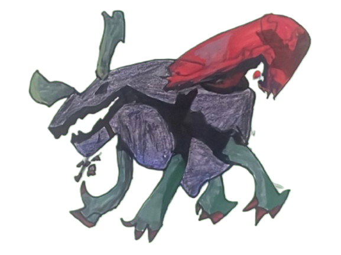

Acustrangulam
The Tissue Blanket Killer

The Tissue Blanket Killer

Acustrangulam was a prolific serial killer who harvested human tissue and created blankets from his victims. His methodology was meticulous - for each blanket, he required the tissue of three individuals approximately 5'5" in height. Records indicate he created 9,213 blankets in total, with 94 remaining unsold at the time of his capture.
He became an urban legend - a figure who would strike silently in the night with a needle, abducting victims and removing their vocal cords so they couldn't scream. Within two days, their remains would become another blanket in his collection.
Through his obsessive dedication to his craft, he developed revolutionary sewing techniques and even invented a sewing machine that could process human tissue in seconds. Despite severe sleep deprivation, he continued his work, prioritizing his "art" to the point of using his own face as a pincushion for needles.
Detective Heiki pursued him for two years before the final confrontation. In a bloodied standoff, Heiki managed to shoot Acustrangulam in the heart, causing him to fall from the building to his presumed death.
The Tissue Blanket Killer case fundamentally changed Detective Heiki Vorz, leaving him with severe PTSD and heightened paranoia. After the case, Heiki developed a pathological fear of blankets and specifically the smell of human tissue, which forced him to perfect his own fried chicken recipe to avoid restaurant smells that triggered flashbacks. His sleep patterns were permanently disrupted, leading to chronic insomnia treated with excessive caffeine consumption and numerous medications. The case cemented his reputation as Keroni's most relentless detective but at devastating personal cost, driving him to extreme protective measures for his niece/nephew and compulsive rooftop screaming sessions to release his trauma when no one is watching.
The trauma of witnessing his own family transformed into Acustrangulam's blankets drove Xa Yoho to speed-run police training and dedicate his life to preventing serial killers from "getting the last laugh." Despite his fractured arm obtained while luring TBK to reveal his location, Xa heroically caught Heiki mid-air during the final confrontation. The case forged an unbreakable bond between him and Heiki, turning them into inseparable partners who stayed up until 5 AM discussing cases and sharing Heiki's caffeine medicines. Xa's experience with Acustrangulam taught him to suppress his nightmares through unwavering positivity, believing that as long as people like Heiki exist, no one else would suffer at the hands of monsters like TBK.

Exposure to soul energy in the supernatural dimension brought Acustrangulam back to life and bonded him with a Wendigo entity. His face was healed, and he adopted a new voice and identity - Kambal Sui - to infiltrate the detective agency investigating his own murders, keeping Detective Heiki off his trail.
Instead of operating from a fixed location, he now conducts his gruesome work primarily in Zen, a supernatural dimension inaccessible to normal humans without morphics. There, he and his Wendigo companion work together, doubling his productivity.
His goals have evolved beyond merely creating and selling blankets. Now, he seeks to prove the inferiority of weak humans while acknowledging the strength of worthy adversaries. However, his exposure to normal human experiences like pizza and dancing has sparked a curious analytical interest in these mundane activities.
He has developed a portable sewing machine, which he enthusiastically calls "machine" before using it to transform victims into blankets. With his knowledge of the afterlife, he now justifies his killings with the belief that morally good souls will reincarnate while sinners are condemned to the mysterious "dimensio mortis."
After resurrection, Acustrangulam gained the ability to summon a Wendigo entity. Unlike traditional wendigo lore, this creature does not represent a transformation of Acustrangulam himself but appears as a separate protective entity, always standing with its hand on Acustrangulam's shoulder.
The Wendigo can be summoned in two ways: by Acustrangulam inserting a needle into his arm to draw blood, or by placing one of his human-tissue blankets over his head. The entity serves as both a loyal bodyguard and assistant in his grisly work.
| Ability | Type | Description |
|---|---|---|
| Needle from Above | Wechuge | Wendigo plants a needle 10 feet above your head. In 3 turns, it falls down resulting in INSTANT DEATH. |
| MACHINE! | Meckanical | Wendigo grabs the sewing machine and runs it on the target, dealing 50% damage. |
| Sew | Wechuge | Wendigo sits down and starts sewing, increasing its will to fight and boosting its attack to 6. |
| Blood Blast | Wechuge | Its 2nd head throws an enemy ball made of blood at your face. |
| Carve Scars | Wechuge | It lunges at you and uses its claws, trying to make you bleed in 1 singular strike. If successful, it screams in satisfaction and debuffs the team's defense by 1. |